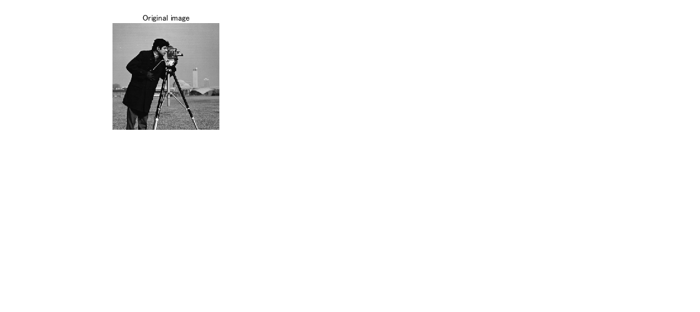
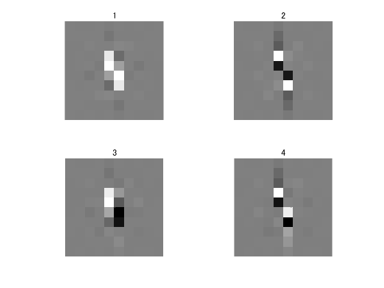
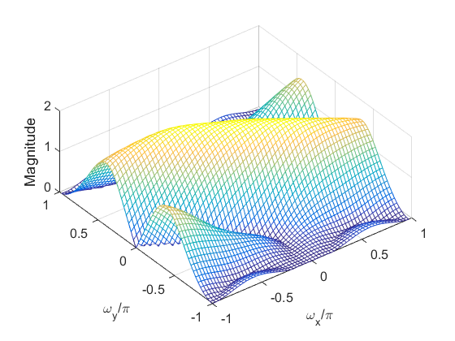
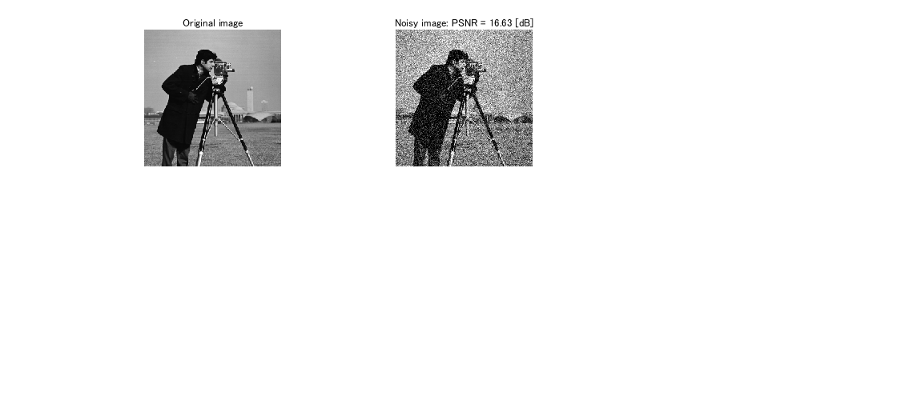
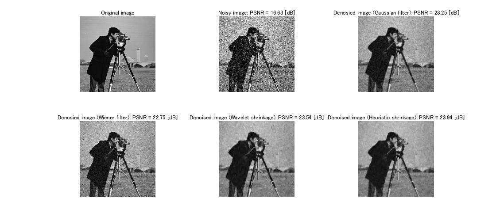
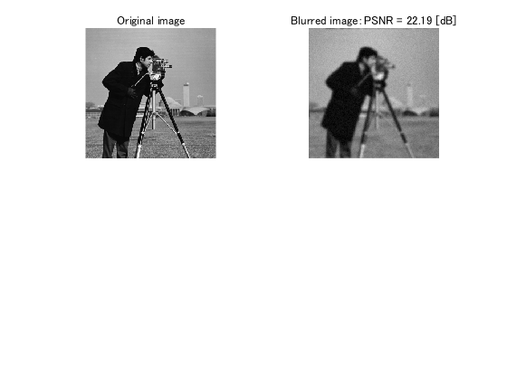
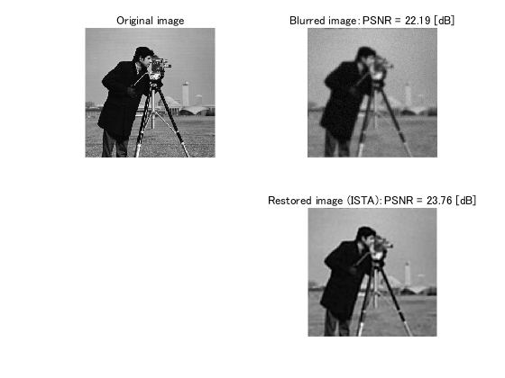
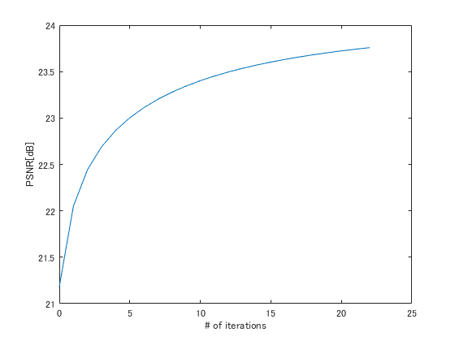
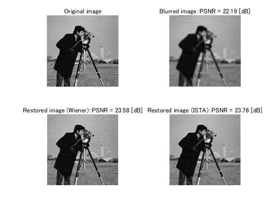
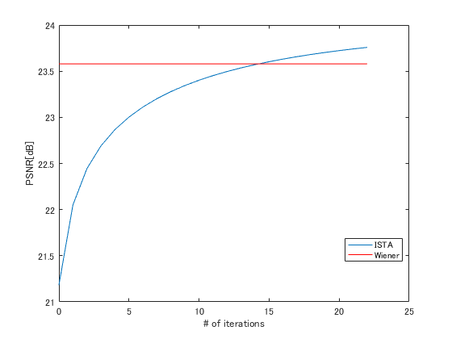

Quick Start of DirLOT Toolbox
A brief introduction to directional lapped orthogonal transforms
Contents
- Readme file
- Preparation
- Sample codes
- Original image for denoising and deblurring.
- Define PSNR
- Selection of DirLOT bases
- Instantiation of forward and inverse transform objects
- Display basis images
- Access to basis images
- Open MATLAB pool
- Build MEX files
- Produce observation by adding noise
- Main process of simple heuristic shrinkage
- Reconstruction of denoised image
- Compare denoising performances
- Setting parameters for deblurring
- Preperation of measurement process
- Produce observation by blurring and adding noises
- Main process of ISTA-based image restoration
- Compare deblurring performances
- Release notes
Readme file
README.txt contains some informations on DirLOT Toolbox.
type('README.txt')
* MATLAB class definitions for directional lapped orthogonal transforms --- NOTICE: SaivDr Package contains fast and stable implementation of DirLOTs. Please see the folder 'examples/dirlot' in the package. http://www.mathworks.com/matlabcentral/fileexchange/45084-saivdr-package --- - Release DirLOT20130201 ** Requirements - MATLAB R2011b or later, -- Image Processing Toolbox -- Optimization Toolbox ** Recomended -- Global Optimization Toolbox -- Parallel Computing Toolbox -- Wavelet Toolbox -- MATLAB Coder ** Brief introduction 1. Change directory to where this file contains on MATLAB. 2. Set the path by using the following command: >> setpath 3. If MATLAB Coder is available, it is recommended to first generate MEX codes for the M-files in the 'mexcode' directory. The M-file script 'mybuild,' which you can find at the top directory of this toolbox, does the task as a batch file. >> mybuild 4. Change directory to 'sample' and run an M-file of which name begins with 'main,' such as >> main_tip2011td and then run an M-file of which name begins with 'disp,' such as >> disp_denoisingresults ** References - Natsuki Aizawa and Shogo Muramatsu, ''FISTA-Based Image Restoration with Multiple DirLOTs," Proc. of IWAIT 2013, pp.642-647, Jan. 2013. - Shogo Muramatsu, Natsuki Aizawa and Masahiro Yukawa, ''Image Restoration with Union of Directional Orthonormal DWTs,'' Proc. of APSIPA ASC 2012, Dec. 2012. - Shogo Muramatsu, ''SURE-LET Image Denoising with Multiple Directional LOTs,'' Proc. of PCS2012, May 2012 - Shogo Muramatsu, Dandan Han, Tomoya Kobayashi and Hisakazu Kikuchi, ''Directional Lapped Orthogonal Transform: Theory and Design,'' IEEE Trans. on Image Proc., Vol.21, No.5, pp.2434-2448, DOI: 10.1109/TIP.2011.2182055, May 2012 - Shogo Muramatsu,Tomoya Kobayashi, Minoru Hiki and Hisakazu Kikuchi, ''Block-wise Implementation of 2-D Non-separable Linear-phase Paraunitary Filter Banks,'' IEEE Trans. on Image Proc., Vol.21, No.4, pp.2314-2318, DOI: 10.1109/TIP.2011.2181527, April 2012 - Shogo Muramatsu and Dandan Han ''Image Denoising with Union of Directional Orthonormal DWTs,'' IEEE Proc. of ICASSP, pp.1089-1092, Mar. 2012. - Shogo Muramatsu, Dandan Han and Hisakazu Kikuchi, ''SURE-LET Image Denoising with Directional LOTs,'' Proc. of APSIPA ASC 2011, THu-PM.PS1.9, Oct. 2011 - Shogo Muramatsu, Tomoya Kobayashi, Dandan Han and Hisakazu Kikuchi, ''Design Method of Directional GenLOT with Trend Vanishing Moments,'' Proc. of APSIPA ASC 2010, pp.692-701, Dec. 2010 - Shogo Muramatsu, Dandan Han, Tomoya Kobayashi and Hisakazu Kikuchi, ''Theoretical Analysis of Trend Vanishing Moments for Directional Orthogonal Transforms, '' Proc. of PCS2010, pp.130-133, Dec. 2010 - Tomoya Kobayashi, Shogo Muramatsu and Hisakazu Kikuchi, ''2-D Nonseparable GenLOT with Trend Vanishing Moments, '' IEEE Proc. of ICIP2010, pp.385-388, Sep. 2010. - Shogo Muramatsu and Minoru Hiki, ''Block-Wise Implementation of Directional GenLOT,'' IEEE Proc. of ICIP2009, pp.3977-3980, Nov. 2009 - Tomoya Kobayashi, Shogo Muramatsu and Hisakazu Kikuchi, ''Two-Degree Vanishing Moments on 2-D Non-separable GenLOT,'' IEEE Proc. of ISPACS2009, pp.248-251, Dec. 2009. ** Contact address: Shogo MURAMATSU, Faculty of Engineering, Niigata University, 8050 2-no-cho Ikarashi, Nishi-ku, Niigata, 950-2181, JAPAN Email: shogo@eng.niigata-u.ac.jp LinkedIn: http://www.linkedin.com/pub/shogo-muramatsu/4b/b08/627 ** Contributors - For coding -- Tomoya KOBAYASHI, 2008-2010 -- Shintaro HARA, 2011- -- Natsuki AIZAWA, 2011- - For testing -- Haruki MINAGAWA, 2009-2010 -- Rui WANG, 2009-2011 -- Dandan HAN, 2009-2012 -- Saemi CHOI, 2010-2011 -- Yuya OTA, 2010- -- Kazuki TAKEDA, 2010- % SVN identifier: % $Id: README.txt 385 2016-04-15 02:59:04Z sho $
Preparation
Before using DirLOT Toolbox, it is required to set the path to the directories 'dirlot', 'genlot', 'appendix' and 'mexcodes' under this Toolbox. Change the current directory to the top directory of DirLOT Toolbox, and execute the command 'setpath'.
setpath
Sample codes
A lot of sample codes are found under directory 'samples.' In the following denoising and deblurring demos, we will use some of sample codes. Please set the path by calling command 'addpath.'
addpath('./samples/tip2012td')
Original image for denoising and deblurring.
Prepare grayscale picture as an original.
clear all close all src = im2double(imread('cameraman.tif')); f1 = figure(1); pf1 = [20 180 1120 500]; set(f1,'Position',pf1) subplot(2,3,1), imshow(src) title('Original image') drawnow
Define PSNR
Define PSNR to evaluate the denoising results. The peak is set to one.
mse = @(x,y) sum((x(:)-y(:)).^2)/numel(x); psnr = @(x,y) -10*log10(mse(x,y));
Selection of DirLOT bases
In this denoising demo, a union of multiple DirLOTs is used. Here, several predesigned bases are selected. If you are interested in the design of DirLOTs, please see the following function:
./appendix/fcn_dirlot_design_fr.m
idx = 1;
fname{idx} = 'lppufb2dDec22Ord44Alp0.0Dir1Vm2.mat'; idx = idx+1;
fname{idx} = 'lppufb2dDec22Ord44Alp1.7Dir2Vmd030.00.mat'; idx = idx+1;
fname{idx} = 'lppufb2dDec22Ord44Alp1.7Dir1Vmd060.00.mat'; idx = idx+1;
fname{idx} = 'lppufb2dDec22Ord44Alp-1.7Dir1Vmd120.00.mat'; idx = idx+1;
fname{idx} = 'lppufb2dDec22Ord44Alp-1.7Dir2Vmd150.00.mat';
Instantiation of forward and inverse transform objects
Instantiate forward and inverse transform objects by using the selected bases, and set the boundary operation to the termination mode.
nTrx = length(fname); % Number of bases fwdtrx = cell(nTrx,1); invtrx = cell(nTrx,1); for idx = 1:nTrx % Load pre-designed LpPuFb2d (DirLOT) object load(['./samples/icassp2012/filters/data128x128ampk3l3/ga/' ... fname{idx} ]); % Variable lppufb contains a predesigned basis. % Prepare forward transform object fwdtrx{idx} = ForwardDirLot(lppufb,'termination'); % Prepare inverse transform Object invtrx{idx} = InverseDirLot(lppufb,'termination'); end
Display basis images
Let's see the basis images of one of the loaded DirLOTs. Method dispBasisImages() of object 'lppufb,' an instance of class AbstLpPuFb2d, can be used for this purpose.
figure(2) dispBasisImages(lppufb) drawnow
Access to basis images
As well, let us verify the frequency magnitude response of the scaling filter. The impulse response of the k-th basis image of object 'lppufb' can be accessed by the subscription.
figure(3) freqz2(lppufb(1)) xlabel('\omega_x/\pi','FontSize',12,'FontName','AvantGrade') ylabel('\omega_y/\pi','FontSize',12,'FontName','AvantGrade') zlabel('Magnitude','FontSize',12,'FontName','AvantGrade') set(gca,'FontSize',12,'FontName','AvantGrade') view(-37.5,60) drawnow
Open MATLAB pool
If Parallel Computing Toolbox (PCT) is avilable, it is recommended to open MATLAB pool.
%matlabpool
Build MEX files
If MATLAB Coder is avilable, it is recommended to generate some MEX codes by executing the batch script 'mybuild.'
%mybuild
Produce observation by adding noise
Add noise by using function 'imnoise', which is available from Image Processing Toolbox
sigma = 40; v = (sigma/255)^2; % noise variance obs = imnoise(src,'gaussian',0,v); % Add white Gaussian noise to the original figure(f1) subplot(2,3,2), imshow(obs) title(['Noisy image: PSNR = ' num2str(psnr(src,obs),'%6.2f') ' [dB]']) drawnow
Main process of simple heuristic shrinkage
Simple heuristic shrinkage is applied to the noisy image. The number of wavelet scales is set to four. The function 'fcn_bayesshrink' realizes the soft-thresholding called BayesShrink.
disp('It takes a few minutes to complete the heuristic shrinkage...') disp('It is recommended to open matlabpool if PCT is available.') nLevels = 4; % Number of wavelet scales % The following code runs in parallel if MATLAB pool is available. parfor itrx = 1:nTrx % Back-Projection (Forward transform) [valueC,valueS] = wavedec2(fwdtrx{itrx},obs,nLevels); % Shrinkage valueC = fcn_bayesshrink(valueC,valueS); % Forward-Projection (Inverse transform) u{itrx} = waverec2(invtrx{itrx},valueC,valueS); end
It takes a few minutes to complete the heuristic shrinkage... It is recommended to open matlabpool if PCT is available.
Reconstruction of denoised image
Combine every pictures obtained by the inverse transform.
y = 0; for itrx = 1:nTrx y = y + u{itrx}/nTrx; end
Compare denoising performances
Comparing denoising performance among four methods: Gaussian filter (imfilter plus fspecial), Wiener filter (wiener2), BayesShrink with single symmetric orthonormal wavelet and simple heuristic shrinkage with mixture of multiple wavelets.
g = imfilter(obs,fspecial('gaussian',[5 5],1),'symmetric'); figure(f1) subplot(2,3,3), imshow(g) title(['Denosied image (Gaussian filter): PSNR = ' ... num2str(psnr(src,g),'%6.2f') ' [dB]']) drawnow w = wiener2(obs); figure(f1) subplot(2,3,4), imshow(w) title(['Denosied image (Wiener filter): PSNR = ' ... num2str(psnr(src,w),'%6.2f') ' [dB]']) drawnow figure(f1) subplot(2,3,5), imshow(u{1}) title(['Denoised image (Wavelet shrinkage): PSNR = ' ... num2str(psnr(src,u{1}),'%6.2f') ' [dB]']) drawnow figure(f1) subplot(2,3,6), imshow(y) title(['Denoised image (Heuristic shrinkage): PSNR = ' ... num2str(psnr(src,y),'%6.2f') ' [dB]']) drawnow
Setting parameters for deblurring
psfSigma = 2; % Std. deviation of PSF nseSigma = 5; % Std. deviation of AWGN eps = 1e-3; % Permitted error for convergence of ISTA lambda = 0.0045; % Control parametero fidelity and sparsity
Preperation of measurement process
psfSize = 2*round(4*psfSigma)+1; psf = fspecial('gaussian',psfSize,psfSigma); linrprocess = @(x) imfilter(x,psf,'conv','circ'); % P dualprocess = @(x) imfilter(x,psf,'corr','circ'); % P.'
Produce observation by blurring and adding noises
obs = imnoise(linrprocess(src),'gaussian',0,(nseSigma/255)^2); f4 = figure(4); pf4 = get(f4,'Position'); pf4(1:2) = [20 80]; set(f4,'Position',pf4) subplot(2,2,1), imshow(src); title('Original image') subplot(2,2,2), imshow(obs); title(sprintf('Blurred image：PSNR = %5.2f [dB]',psnr(src,obs)))
Main process of ISTA-based image restoration
ISTA-based image restoration is applied to a blurred image. The number of wavelet scales is set to four.
disp('It takes a few minutes to complete ISTA...') disp('It is recommended to open matlabpool if PCT is available.') % Preprocessing for calculating the max. eigen value of P.'P upst = 0*obs; upst(1,1) = 1; eps_ = 1e-6; err_ = Inf; while ( err_ > eps_ ) upre = upst; v = linrprocess(upre); % P upst = dualprocess(v); % P.' err_ = norm(upst(:)-upre(:))^2/norm(upst(:)); end n = sum(upst(:).'*upst(:)); d = sum(upst(:).'*upre(:)); lc = n/d; fprintf('Lipschitz Const.: %f\n',lc); % Main iteration of ISTA softshrink = @(y,lmd) sign(y).*max(abs(y)-lmd,0); [y,s] = udirsowtdec2(dualprocess(obs),nLevels,fwdtrx); err = Inf; figure(f4) subplot(2,2,4), hi = imshow(obs); ht = title(sprintf('Retored image(ISTA)：PSNR = %5.2f [dB]',... psnr(src,dualprocess(obs)))); itr = 0; psnrs = psnr(src,dualprocess(obs)); f5 = figure(5); pf5 = get(f5,'Position'); pf5(1:2) = [pf4(3)+20 80]; set(f5,'Position',pf5); hp = plot(itr,psnrs); xlabel('# of iterations') ylabel('PSNR[dB]') while ( err > eps ) ypre = y; v = linrprocess(udirsowtrec2(ypre,s,invtrx)); e = udirsowtdec2(dualprocess(v-obs),nLevels,fwdtrx)/lc; y = softshrink(ypre - e,lambda/lc); err = norm(y(:)-ypre(:))^2/norm(y(:)); resIsta = udirsowtrec2(y,s,invtrx); set(hi,'CData',resIsta) set(ht,'String',sprintf('Restored image (ISTA)：PSNR = %5.2f [dB]',... psnr(src,resIsta))) itr = itr+1; psnrs = [psnrs psnr(src,resIsta)]; set(hp,'XData',0:itr,'YData',psnrs); drawnow end
It takes a few minutes to complete ISTA... It is recommended to open matlabpool if PCT is available. Lipschitz Const.: 0.993507 
Compare deblurring performances
Comparing denoising performance among four methods: Gaussian filter (imfilter plus fspecial), Wiener filter (wiener2) and ISTA-based deblurring with a union of DirSOWTs.
noise_var = (nseSigma/255)^2; estimated_nsr = noise_var / var(src(:)); resWnr = deconvwnr(obs, psf, estimated_nsr); figure(f4) subplot(2,2,3), imshow(resWnr); title(sprintf('Restored image (Wiener)：PSNR = %5.2f [dB]',... psnr(src,resWnr))) figure(f5) hold on plot(0:itr,psnr(src,resWnr)*ones(1,itr+1),'r') legend('ISTA','Wiener','Location','Best') hold off %matlabpool close 
Release notes
RELEASENOTES.txt contains release notes on DirLOT Toolbox.
type('RELEASENOTES.txt')
* Release notes on DirLOT Toolbox
- DirLOT20130901
-- Minor revision: Simulink models in 'embedded' folder were fixed.
- DirLOT20130201
-- Major revision
--- quickstart.m was revised to add performance evaluation of deblurring.
-- Minor revision
--- Added sample codes for APSIPA2012
- DirLOT20121101
-- Major revision
--- Newly introduced some classes defined as System objects,
which are available for code generation and embedded implementation
on BeagleBoard-xM and PandaBoard-ES. See folder 'embedded.'
- DirLOT20120501
-- Minor revision
--- Introduced a batch script 'mybuild' to generate some MEX codes.
--- Added sample codes for ICASSP2012
--- Added sample codes for PCS2012
--- Renamed mytest2008a.m to mytest.m
- DirLOT20111201
-- Major revision
--- Separable GenLOT classes were newly introduced. See folder 'genlot.'
--- Class AmplitudeErrorEnergy was introduced.
--- Class SubbandSpecification was modified to provide a new method
AmplitudeSpecification().
--- Testing frame work mlunit_2008a was experimentaly introduced.
-- Minor revision
--- quickstart.m was revised to evaluate PSNRs.
--- Some codes in samples were revised.
--- Dependencies on the deprecated class LpPuFb2d were reduced.
--- Files mexcodes/supportExtensionHorizontal.m and
mexcodes/supportExtensionVertical.m were renamed to correct the spel.
- DirLOT20111101
-- Minor revision: a bug in mexcodes/supportExtentionVertical.m was fixed.
- DirLot20110818
-- ForwardDirLot.m and InverseDirLot.m were modified for acceleration.
-- The subband assignment in SubbandSpecification.m was revised.
-- Many sample scripts were appended.
- DirLot20110112
-- Bugs in PSNR calcuation were fixed.
The following codes contained the bugs:
samples/icip2009/main_icip2009dct.m
samples/icip2009/main_icip2009dirlot.m
samples/icip2009/main_icip2009dwt97.m
dirlot/DirectionalDwtQuantizer.m
dirlot/DirectionalDwtQuantizerTest.m
dirlot/UniformSubbandQuanizer.m
dirlot/UniformSubbandQuantizerTest.m
appendix/Dwt97Quantizer.m
appendix/Dwt97QuantizerTest.m
The calcuation should have been written as
sI=im2uint8(I);
sX=im2uint8(X);
psnr = 10*log10( (255^2)*numel(sI)/sum((int16(sI(:))-int16(sX(:))).^2));
although it was wrongly implemented as
sI=im2uint8(I);
sX=im2uint8(X);
psnr = 10*log10( (255^2)*numel(sI)/sum((sI(:)-sX(:)).^2));
- DirLot20101201
-- Design with trend vanishing moments (TVMs) was supported.
-- Implementation of class LpPuFb2d was divided into four
classes LpPuFb2dVm0, LpPuFb2dVm1, LpPuFb2dVm2 and LpPuFb2dTvm in
terms of the vanishing moment condition. Class LpPuFb2d was
modified as a bridge to these new classes for maintaining the
compatibity with the previous releases.
-- Many sample scripts were appended.
- DirLot20100313
-- A synchronization problem in parallel computing of 'ga' and
'fmincon' was fixed.
- DirLot20100107
-- Class LpPuFb2d was modified so that a cell format of parameter
matrix set can be accepted.
- DirLot20091221
-- Working with Genetic Algorithm and Parallel Computing Toolbox
became available for the design process.
- DirLot20091210
-- Dependency of class LpPuFb2d on class PolyPhaseMatrix2d was reduced
for acceleration of the design process.
- DirLot20091130
-- Functions im2col and col2im were used instead of function colfilt.
-- Revised for supporting MATLAB releases from R2008a to R2009a again.
- DirLot20091129
-- ForwardDirLot.m and InverseDirLot.m were modified for acceleration
by removing the dependency on BlockWiseAnalyzer.m and
BlockWiseSynthesizer.m.
% SVN identifier:
% $Id: RELEASENOTES.txt 382 2013-08-30 23:44:54Z sho $